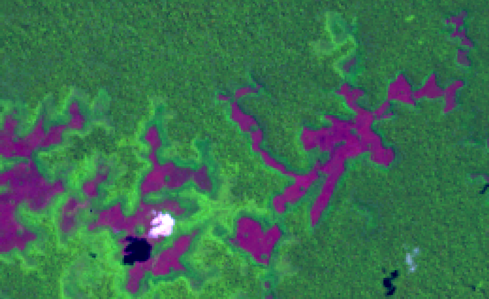
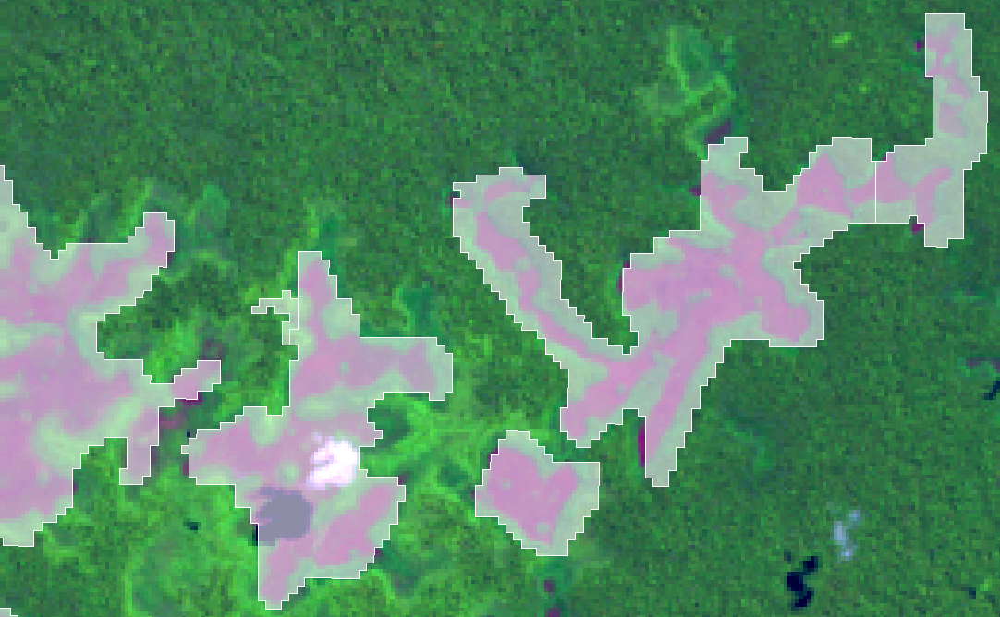

to
select the output
directory and also inform the new layer name to store the result, or
to
select the output
directory and also inform the new layer name to store the result, or to select the Data
Source.
to select the Data
Source.
|  |  |
| Raster without polygons overlapping | Raster with polygons overlapping |
to
select the output
directory and also inform the new layer name to store the result, or to select the Data
Source.The Raster to Vector result can be stored in different TerraLib data sources. Check data source selector for more details on how to select a data source.